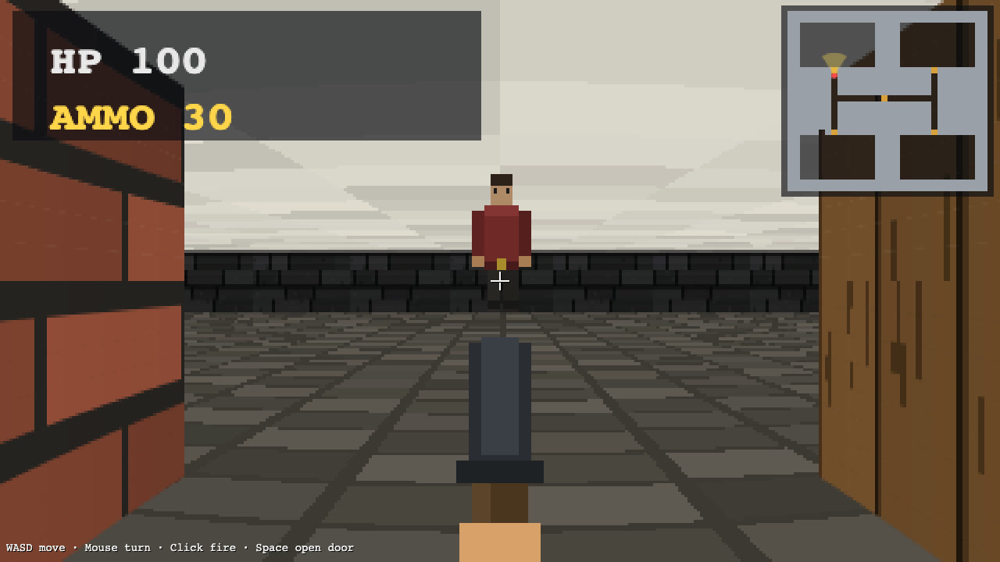

24 November 2026 · Agentic task loop · first-person raycaster
Raycaster Shooter · Inkling 2 Mini · MLX-Serve 26.11.4 prerelease · Tenaz main + Pi
Tenaz ended COMPLETE_WITH_GAPS after 12 h 17 min, 50 sessions and 15 tasks done; T011 was dropped and replaced by T014, and the final review's second cycle returned CHANGES and added T017 (confirm the enemy fight on screenshots), which was left to do. Played: the spawn view matches the brief, Space slides doors open, walls, floor and ceiling are textured, an enemy walks toward the player and falls and stays down after three hits, and ammo counts down. The map is four identical rooms joined by one-cell corridors, enemies never hurt the player, and the hit flash is never drawn.

What was checked
- Runner final state COMPLETE_WITH_GAPS on 24 November 04:07:23.691 UTC: 15 tasks done, T011 dropped, T017 to do. Bootstrap: spec (21 requirements, R21 manual) and verify passed first time; the task step was rejected once (session 003 ended on a reply cut at the output limit with no task card written) and accepted on the second session with 13 tasks.
- T011 (doors and spawn scene): attempts 1 and 2 ran no T011 check, and attempt 3's review returned CHANGES. Its split (034) ended on a cut reply and added nothing, so T011 blocked. The next replan (035) ran at a lower effort because replan 029 had ended on a cut reply; it finished, dropped T011 and added T014 with the same scope, done on its first attempt. Replans 018 and 049 changed nothing.
- Final review 1 returned CHANGES (21 requirements, R21 manual, none missing) and added T015 (dark streaks in the ceiling near the horizon) and T016 (barrel sprite not standing on the floor), both done. Final review 2 found R8 and R9 not met on evidence because its play-through never reached an enemy, returned CHANGES and added T017; Tenaz's two-cycle limit left T017 open.
- Runner events: 2 of 50 sessions ended early, both builder sessions stopped at the turn budget (61 turns, abort at 60 of 40) and continued by a fresh session. No context compactions, provider errors or engine retries. 13 replies stopped at the 16,384-token output limit, in 8 sessions; 6 sessions ended on such a reply, and the next session of the same role ran at a lower effort 5 times (the split had no later session). 2 of 17 task reviews returned CHANGES (T005 and T011).
- Private state: Tenaz 3f43405 keeps it in the project's .git/tenaz. No session removed it, and the 50 Pi session logs, 1,189 proxy records and 1,500 memory samples are all present.
- Configuration: Pi 1.6.0 over RPC with the openai-completions provider mlxserve-inkling, thinking high, vision, a 131,072-token context window and max_tokens 16,384; Tenaz main 3f43405 with defaults, temperature 1.0, generic engine, sandbox off; config and parameters identical to the earlier 2f1b04c attempt. The preflight reported reasoning, cache, tools and vision all true.
- `verify --all` on a clean clone of the final commit 5fed693 with the run's node_modules: 17 of 17 passed, as in Tenaz's last verify. Model-written checks, not an independent acceptance suite.
- Played by Claude in headless Chromium with Playwright (pointer lock stubbed, since headless Chromium grants none), twice on 24 November, the second time on the published build. The spawn view matches the brief (closed door ahead, a barrel half behind a wall edge, HUD and minimap); Space slides doors open; brick, wood and stone walls and textured floor and ceiling; the first enemy walks toward the player and three hits kill it, after which it lies on the floor and stays down; ammo counts down from 30.
- Problems found in play and in the source: the map is four identical 12x8 rooms joined by one-cell corridors, with five doors and three enemies; enemies walk up to the player but never hurt them (health is set to 100 and never changed; the brief does not ask for enemy damage); the brief asks that a hit enemy flash, but enemies.js sets a hit-flash timer that sprites.js never reads, so no hit flash is drawn; the brief asks for pillars, and the pillar sprite exists but none is placed. Of the eight Must have items, seven pass and the last (click fires, a hit enemy reacts) passes only in part. The muzzle flash is drawn for 0.12 s in gun.js, but no screenshot shows it: the renderer reads every texture pixel with getImageData and ran at 11 to 13 fps in headless Chromium, so the flash lasts about one frame. Not checked: frame rate in a normal browser window, sound (the brief asks for none).
- Engine metrics: one mlx-serve process wrote 1,423 request summaries without timestamps. The first 228 belong to the earlier attempt and its resume; then come this run's 6 preflight requests and 1,189 run requests. 1,187 of Tenaz's 1,189 proxy records match a summary one-to-one, in order and uniquely by (prompt, cached, output), from the first run request to the last summary in the log; the other 2 are the turn-budget aborts, empty in the proxy and logged by the engine as client disconnects with 1 output token. For all 50 sessions, the summaries' fresh input, cached and output tokens, without the two aborts, equal the usage Tenaz journaled. Pi's 1,189 assistant messages equal the proxy records.
- Memory: Tenaz's per-session summaries (1,500 samples at 30 s) report memory pressure normal in all 50 sessions; the mlx-serve process peaked at 30.0 GiB.
- Vision: no image refusals; 430 run requests carried images.
- Public artifact: `vite build --base ./` of the final commit 5fed693 in the clean clone; its JavaScript bundle is byte-identical to the run's own dist, and only the asset path in index.html differs. Plain canvas code with no bundled library beyond Vite's module-preload helper. It made no request outside its folder in a headless check; the console showed only Chrome's getImageData readback warnings. Screenshot: a frame from that check at 1280x720, 0.9 s after opening the door into room B.
Limits of this evidence
Completion is the runner outcome. Inkling 2 Mini, a 26.4B-total, 3.4B-active looped mixture of experts, on mlx-serve's 26.11.4 prerelease at a 128K context, on the Raycaster brief of the Qwen 3.8 27B pi-adapted runs. A clean rerun after an attempt at the same settings on Tenaz main 2f1b04c blocked on T002 with 2 tasks done, when its split and its replan both ended on replies cut at the output limit. Tenaz 3f43405 differs from 2f1b04c mainly in keeping its private folder in .git and stopping processes a session leaves running; the lower effort after a cut reply was already in 2f1b04c. Not like for like with the Qwen runs: model, engine, temperature (1.0 against 0.8 or 0), thinking (high against off), Pi (1.6.0 against 1.4.0) and Tenaz builds all differ. The playthroughs were by Claude, with pointer lock stubbed.
Configuration
The model, serving engine and agent used for this execution.
| Field | Value | Detail |
|---|---|---|
| Model · primary | Inkling 2 Mini · primary · reasoning high (Pi thinking level high). Five sessions that followed a session ending on a reply cut at the output limit ran at a lower effort set by Tenaz. | Per the pack's model card: the release's own expert weights (NVFP4 on layers 0-19, MXFP8 on 20-23), attention, embedding and head in MLX affine 8-bit with group size 64, vision tower in bf16. config.json declares affine 8-bit, group 64. |
| Checkpoint · primary | ddalcu/Inkling-2-Mini-MLX-8bit | primary model artifact · revision unrecorded (the download of 22 November 2026 used by the Digger 3D record; files unchanged since then, commit not kept) |
| Runtime | MLX-Serve 26.11.4-pre-release.1 · MLX 0.32.5 (startup banner); macOS arm64 prerelease archive mlx-serve-bin-macos-arm64.tar.gz, sha256 510de30e3db01786098e7022dddb84158462e2f2333b08dde1a63e0e3ccbc65e, the install the engine start script runs · One mlx-serve process, started at 13:49:01 UTC on 23 November for the earlier attempt on Tenaz 2f1b04c and kept running for this run; registered with Tenaz as a generic engine with start and stop scripts and reached through Tenaz's proxy. --ctx-size 131072 and defaults otherwise: KV cache not quantized, one request at a time, prefill chunk 4,096, a hybrid hot prefix cache with a 5,216 MB budget, PLD on (draft length 5), DSpark speculative decoding with inkling2_loop native draft stages (block 8). The loader logged that it skipped mtp.safetensors because the weight index does not name it. Every run request ran at temperature 1.00 (pinned by Tenaz), top-p 0.95 and top-k 0 (the engine's values), thinking on, max_tokens 16,384. mode | inference engine and exact build |
| Harness | Pi coding agent over RPC driven by Tenaz main 3f43405 (it reports 0.8.0 (3f43405)) 1.6.0 | the agent or client that drove the run |
| Runner | Tenaz main · build 3f43405 after 0.8.0 (unreleased) | open-source runner, github.com/aartiles/tenaz · how the runner evolved |
| Hardware | Apple MacBook Pro · 64 GB unified memory | hardware recorded for this execution |
| Workload | Raycaster Shooter · revision 1 | One-shot raycaster brief by @ddalcu, as posted by @Beamsters1, used verbatim as the Tenaz brief (sha256 5c3cf17c..., the same file as the Qwen 3.8 27B pi-adapted Raycaster runs); the local model wrote its own spec, verify and task plan. Per-session context budget 85,196 tokens (0.65 of 131,072), as in those runs. No operator action after launch. |
| Context window | 131,072 tokens | maximum context configured for the serving runtime |
| Repetitions | 1 | executions recorded for this workload; one means an indicative result, not an estimate |
Inference measurements
Engine-side rates for this run. Each figure states its own statistic; figures from different runs are not interchangeable.
| Metric | Value | Definition |
|---|---|---|
| Decode · per-request median | 43.6 tok/s | Median of mlx-serve's per-request decode rate across run requests with output. · n=1187 · 10th percentile 34.5, 90th percentile 61.9. Decode slows as the prompt grows: median 56.0 tok/s below 16K tokens (205 requests), 31.3 above 64K (28 requests). |
| Decode · output-weighted | 38.4726 tok/s | Total output tokens divided by the sum of each request's output tokens over its decode rate. · n=1187 |
| Cold prefill · median | 986.7 tok/s | Median of mlx-serve's logged prefill rate on requests with no cached tokens. · n=123 · Prompts of 6,415 to 74,976 tokens (median 28,126). mlx-serve does not log TTFT, so none is reported. |
| Accepted draft tokens per round | 2.3401 tokens/round | Total DSpark accepted draft tokens divided by total DSpark draft rounds, from mlx-serve's per-request spec-stats lines. · n=1187 · 277,959 accepted tokens over 118,781 rounds. mlx-serve does not log drafted-token counts, so this is not an acceptance percentage. |
| Server process memory · peak | 30 GiB | Largest mlx-serve process memory in Tenaz's 30-second samples, from the per-session summaries. · n=1500 |
| Swapped in during the run | 0.548 GiB | Swap-in pages summed over Tenaz's per-session memory summaries (35,913 pages of 16 KiB); host-wide swap I/O, not resident memory. · n=1500 · Memory pressure normal in all 50 sessions. Time between sessions is not sampled. |
Agent session counters
Agent-wide usage totals. These include reasoning, tool calls and waiting, and are not model decode speed.
| Metric | Value | Definition |
|---|---|---|
| Run elapsed | 737.2 min | Session 001 start after the preflight (23 November 15:50:13.881 UTC) to COMPLETE_WITH_GAPS (24 November 04:07:23.691 UTC); includes tools, checks and retries. · n=1 · 12 h 17 min 9.8 s; no pauses. |
| Agent sessions | 50 sessions | All harness sessions: 4 bootstrap, 22 builder, 17 reviewer, 4 replan, 1 split and 2 final reviewer. · n=1 |
| Sessions ended early | 2 sessions | Sessions with ok=false: 2 builder sessions stopped at the turn budget (61 turns, abort at 60 of 40). · n=50 · Each was continued by a fresh session and not counted as an attempt. |
| Operator interventions | 0 actions | No pauses, relaunches, configuration changes or edits after the first session started. · n=1 |
| Model requests | 1,189 requests | mlx-serve request summaries of this run after its 6 preflight requests; every request logged a summary. · n=1 · 2 are turns aborted at the turn budget. No compaction requests. |
| Matched model requests | 1,187 requests | Proxy records matched one-to-one, in order and uniquely to mlx-serve summaries by (prompt, cached, output). · n=1187 · The other 2 proxy records are empty records of the two aborted turns. |
| Tool calls | 1,293 calls | Sum of harness tool_calls across all 50 session records. · n=50 |
| Context compactions | 0 compactions | Compaction count across all session records. · n=50 |
| Responses stopped at the output limit | 13 responses | Engine summaries that ended with finish reason length at 16,384 output tokens. · n=1189 · In 8 sessions; 6 sessions ended on such a reply. |
Context and token counters
Token totals as reported by the harness or engine. Cached and cumulative figures are not additive with fresh input.
| Metric | Value | Definition |
|---|---|---|
| Maximum prompt context | 74,976 tokens | Largest prompt across run requests; not the configured server window. · n=1189 · Tenaz's per-session context peak, which adds the reply, reached 80,527 tokens of the 85,196 budget. |
| Cumulative input | 39,497,533 tokens | Sum of total prompt tokens across run requests, including repeatedly reused context; not unique input. · n=1189 |
| Cached input | 35,111,577 tokens | Sum of prompt tokens mlx-serve reported cached across run requests. · n=1189 |
| Fresh input | 4,385,956 tokens | Total prompt minus cached prompt tokens across run requests. · n=1189 |
| Output tokens | 1,461,917 tokens | Sum of output tokens across run requests, reasoning included. · n=1189 |
| of which reasoning output | 1,104,480 tokens | Reasoning tokens in Pi's usage, summed over the 50 journaled sessions. · n=50 · Pi's output total is 1,461,915 tokens; the engine adds 1 token for each aborted turn. |
| Prompt-cache token share | 88.8956 % | Cached prompt tokens divided by total prompt tokens, weighted by tokens across run requests. · n=1189 |
Recorded check counters
Counts from the checks recorded with this run.
| Metric | Value | Definition |
|---|---|---|
| Tasks completed | 15 tasks | Final task cards marked done; T011 dropped (replaced by T014), T017 left to do. · n=17 |
| Reviews returning changes | 2 reviews | Task review verdicts returning CHANGES (T005 attempt 1 and T011 attempt 3). Both final reviews returned CHANGES. · n=17 |
| Project checks passing | 17 checks | Checks passing in `verify --all` on a clean clone of the final commit, rerun after the run. · n=17 · Model-written checks, not an independent acceptance suite. |
Request records & provenance
1187 numeric records in proxy order, each matched one-to-one to an mlx-serve summary by (prompt, cached, output). The 2 turns aborted at the turn budget are left out; the aggregate metrics include them. Prefill and decode are mlx-serve's logged rates; with cached tokens its prefill rate is not a whole-prompt rate. mtp_attempts and mtp_accepts are DSpark draft rounds and accepted draft tokens. No prompts, tool results, session identifiers or local paths are included.
Run ID: 2026-11-23-inkling-2-mini-mlx8bit-128k-mlx-serve-v26114pre1-tenaz-main-3f43405-pi-raycaster-shooter
One execution, with checks transcribed from the retained record. A completed session is not a quality score. Measurement method · All runs